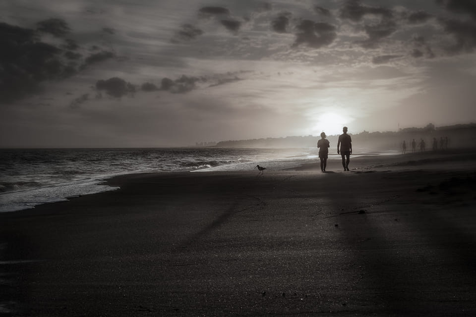
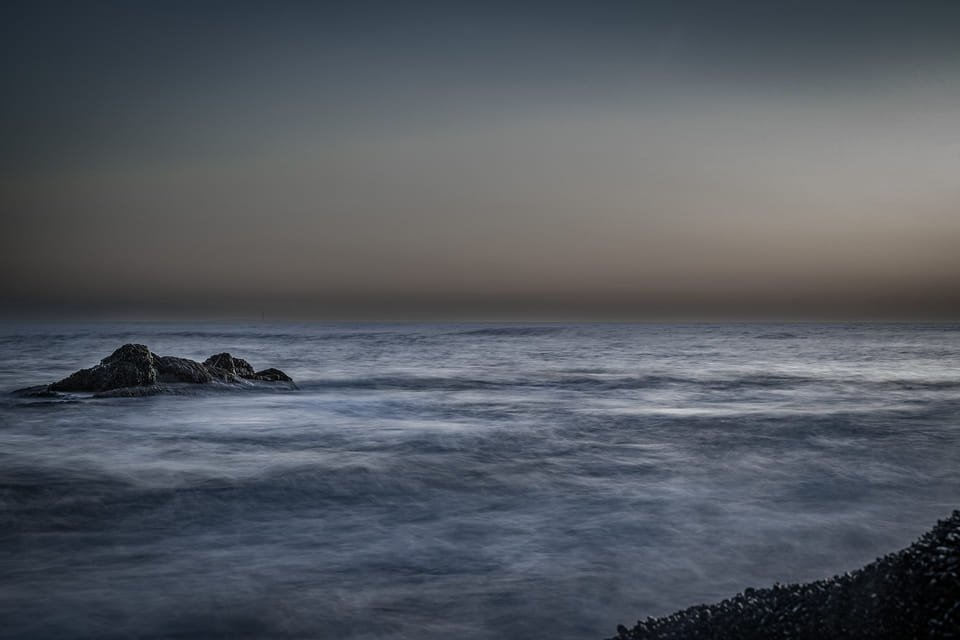
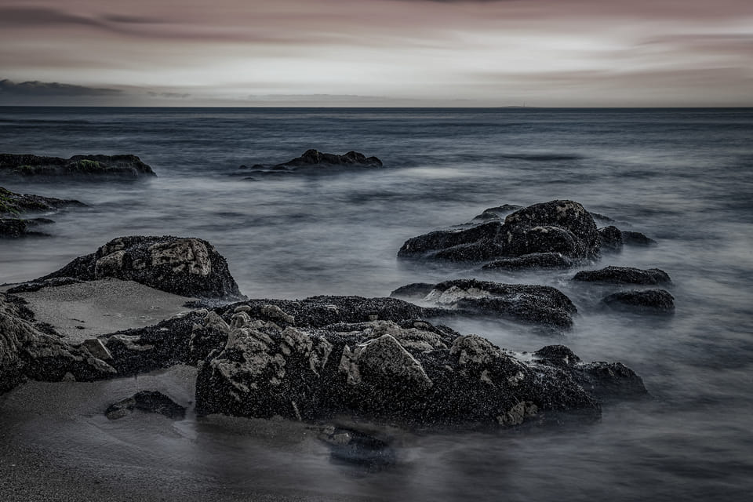
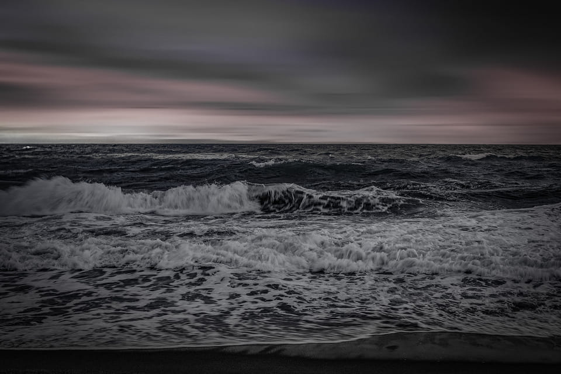
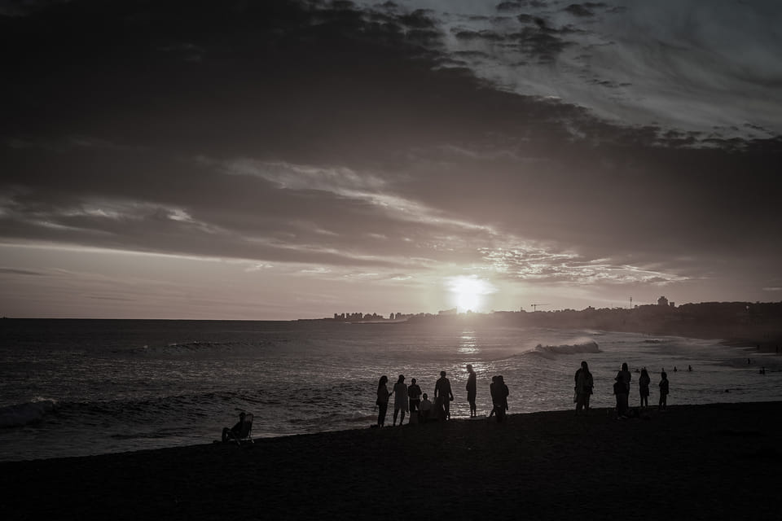
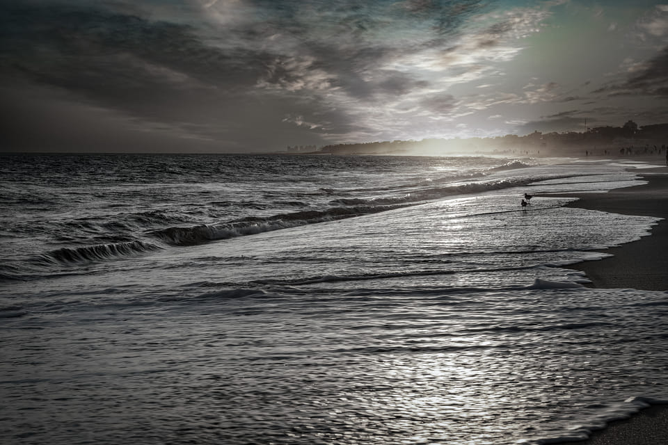
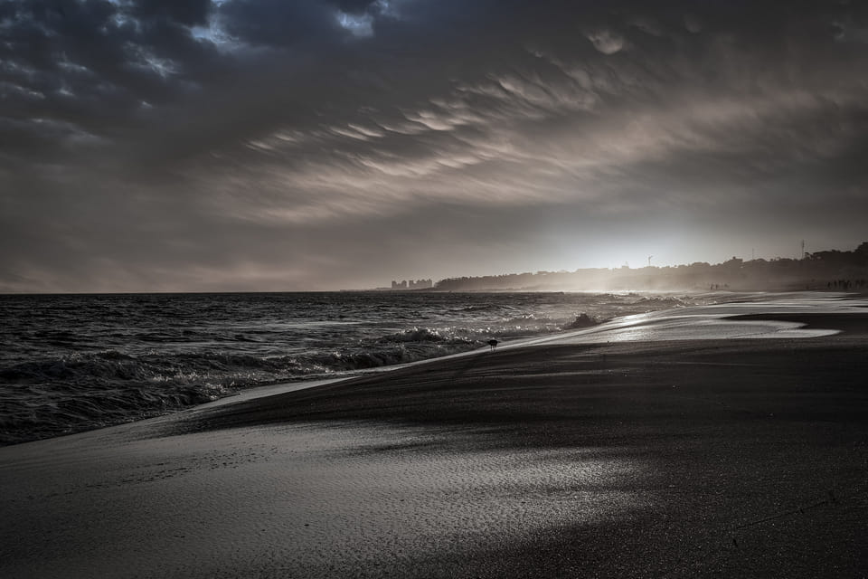
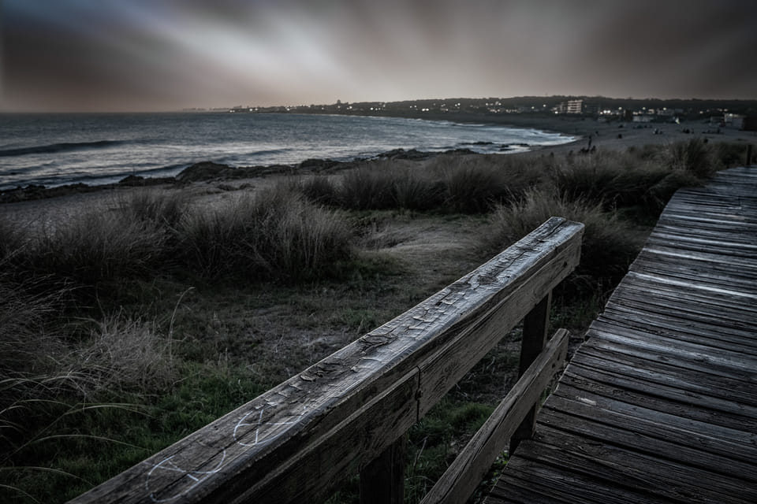
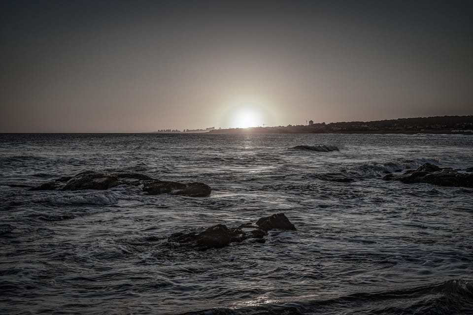
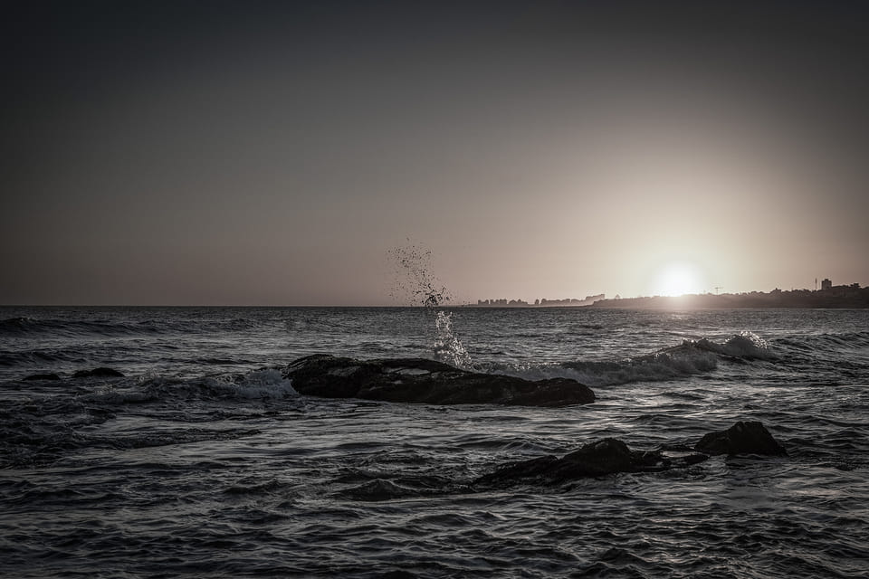

← TODAS LAS SERIES
Mareas eternas
El único paisaje que se reescribe dos veces por día.

Mareas eternas № 1

Mareas eternas № 2

Mareas eternas № 3

Mareas eternas № 4

Mareas eternas № 5

Mareas eternas № 6

Mareas eternas № 7

Mareas eternas № 8

Mareas eternas № 9

Mareas eternas № 10
Cualquier fotografía de esta serie se imprime y se firma por encargo. Sumala a tu selección.